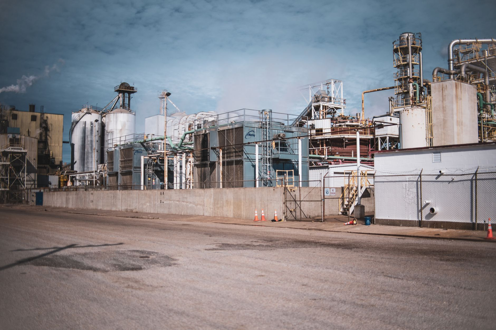

롯데케미칼, 율촌 컴파운딩 공장 연내 가동…고부가 소재 전략 가속

롯데케미칼이 전남 율촌산업단지에 건설 중인 엔지니어링 플라스틱 컴파운딩 공장을 올해 안에 본격 가동한다고 밝혔다. 이 공장은 자동차·전자·산업용으로 쓰이는 고성능 복합 소재를 생산하는 시설로, 가동 초기 연산 2만 톤 규모의 생산 능력을 갖추게 된다.
컴파운딩은 베이스 폴리머에 강화재·충전제·첨가제 등을 배합해 특정 물성을 구현하는 고부가 공정이다. 단순 범용 수지보다 마진이 높고 고객사 맞춤형 개발이 필요해 기술 진입 장벽이 높다. 롯데케미칼은 이 시장을 향후 수익성 개선의 핵심 축으로 삼고 있다.
롯데케미칼은 2분기 연결 기준 매출 5조 6864억원, 영업이익 1101억원을 기록했다. 중동 지역 지정학적 불확실성에도 생산 최적화와 수익성 중심 제품 믹스 전환으로 전분기에 이어 흑자 기조를 이어간 점이 주목된다.
사업 부문 중 첨단소재는 매출 1조 1551억원, 영업이익 1325억원을 달성하며 전사 실적을 견인했다. 폴리카보네이트(PC), 엔지니어링 플라스틱(EP), 고기능성 필름 등 핵심 제품의 스프레드 확대와 원·달러 환율 효과가 복합적으로 작용한 결과다.
기초화학 부문은 정기 보수와 원료비 상승으로 수익성이 다소 압박을 받았으나, 롯데케미칼은 대산·여수 지역 범용 석화 설비를 단계적으로 재편하며 고부가 품목 중심으로 포트폴리오를 전환하는 작업을 병행 중이다.
율촌 컴파운딩 공장은 특히 전기차 내·외장재와 산업용 로봇 부품 소재 수요를 겨냥하고 있다. 전기차 보급 확대와 함께 경량화·내열성을 갖춘 엔지니어링 플라스틱 수요가 급격히 늘고 있어, 가동 초기부터 주요 완성차 업체와 소재 공급 협의가 활발하다.
글로벌 시장 조사업체 마켓앤마켓은 글로벌 엔지니어링 플라스틱 컴파운딩 시장이 2026년 약 1280억 달러에서 2031년 1750억 달러로 성장할 것으로 전망했다. 아시아-태평양 지역이 전체 수요의 45% 이상을 차지하는 최대 시장으로, 국내 생산 확대가 경쟁력을 가질 수 있는 구조다.
롯데케미칼 관계자는 '율촌 공장이 가동되면 국내 컴파운딩 자급 능력이 높아지고 수입 대체 효과도 기대된다'며, '자동차·전자 고객사와의 장기 공급 계약 체결도 순조롭게 진행 중'이라고 밝혔다.
경쟁사 동향을 보면 LG화학은 청주 복합소재 공장 증설을 마무리했고, SK케미칼은 바이오 기반 엔지니어링 플라스틱 라인업을 강화하고 있다. 글로벌 업체인 BASF와 사빅도 아시아 컴파운딩 생산 거점을 확대 중이어서 경쟁 강도는 높아지는 추세다.
국내 소재 산업 전반에서는 범용 화학에서 고부가 특수소재로의 전환이 가속화되고 있다. 정부가 추진 중인 국내생산세액공제 확대 정책도 이러한 전환을 뒷받침하는 정책 환경으로 작용할 전망이다.
롯데케미칼은 2027년까지 첨단소재 부문 매출 비중을 전체의 30% 이상으로 높이겠다는 중장기 목표를 제시했다. 율촌 공장 외에도 바이오 소재, 고성능 접착제, 차세대 반도체 패키징용 봉지재 등 신규 사업화 아이템도 발굴 중이다.
투자 업계에서는 롯데케미칼의 고부가 전환 속도가 밸류에이션 재평가의 핵심 변수가 될 것으로 보고 있다. 다만 범용 기초화학 부문의 구조적 마진 압박이 완전히 해소되지 않은 상황이어서, 전환 완료까지 연간 이익의 변동성이 지속될 수 있다는 분석도 나온다.